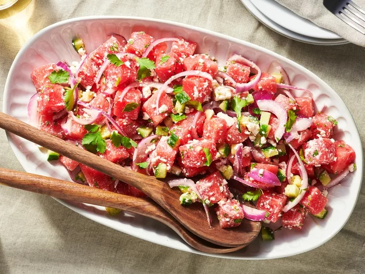

Watermeoln Salad
by CHICA3578 | Updated on May 06, 2024

Description
This watermelon salad is fun to make, refreshing, and fruity.
Watermelon Salad Ingredients
Here's what you'll need to make this watermelon salad recipe:
- Onion: Red onion adds bright color and bold flavor.
- Lime juice: Lime juice brightens up the flavor.
- Watermelon: Of course, you will need watermelon!
- Cucumber: English cucumbers lend refreshing flavor.
- Feta: Crumbled feta cheese gives the watermelon salad a creamy flavor.
- Herbs and seasonings: Finish the salad with fresh cilantro, sea salt, and
cracked black pepper.
How to Make Watermelon Salad Step-By-Step
You can make this fresh watermelon salad up to a day in advance. However, it’s best to add the feta just before serving so it doesn’t become soggy.
- Gather the ingredients.
- Place red onion slices in a small bowl; pour over lime juice. Allow onions to marinate while assembling the salad.
- Gently combine watermelon, cucumber, feta cheese, and cilantro in a large bowl; season with black pepper.
- Toss watermelon salad with marinated onions and season with sea salt just before serving.
- Serve and enjoy!